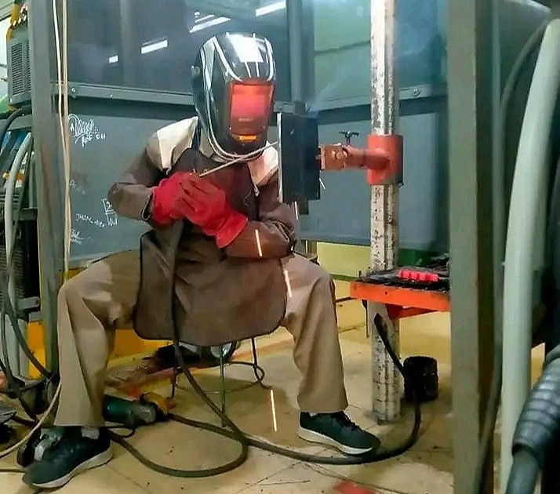
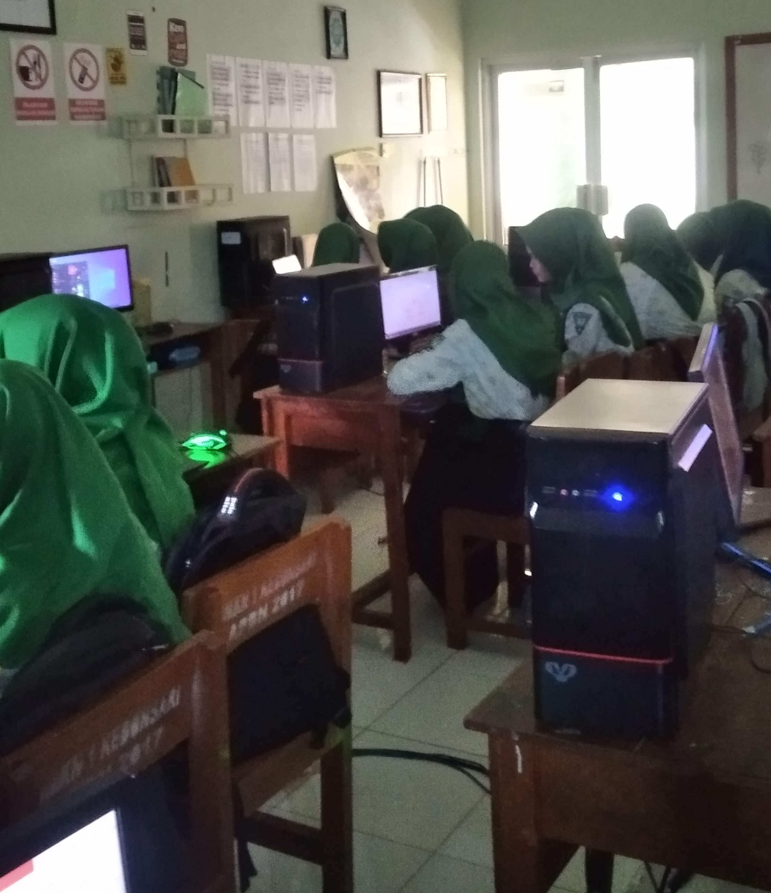
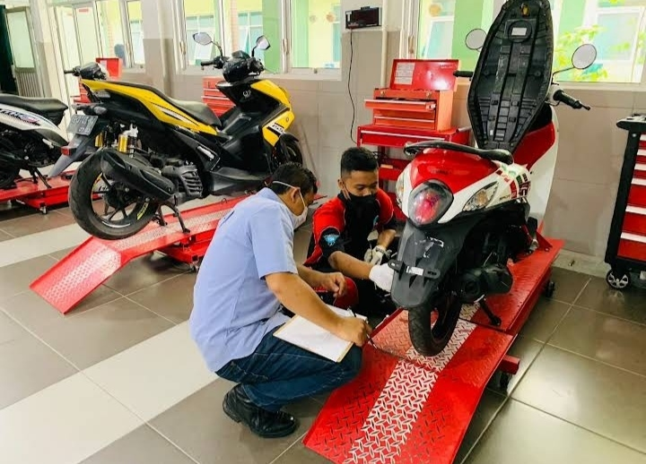

Jurusan Smkn1kebonsari
. Teknik Kendaraan Ringan
teknik kendaraan ringan merupakan kompetensi keahlian dibidang teknik otomotif yang menekankan keahlian pada bidang pengusaan jasa perbaikan kendaraan ringan.
.
teknik pengelasan merupakan jurusan yang mempelajari membaca gambar teknik,persiapan pengelasan,pelaksanaan pengelasan,dan pemeriksaan hasil pengelasan.
. Teknik Komputer Jaringan
teknik komputer jaringan merupakan sebuah kejuruan yang mempelajari tentang cara merakit computer,mengenal dan mempelajari komponen hardware apa saja yang ada didalam computer,merakit computer serta fokus mempelajari jaringan dasar.
.
teknik bisnis sepeda motor merupakan salah satu cabang ilmu teknik mesin yang mempelalari tentang bagimana merancang,membuat dan mengembangkan alat-alat transportasi darat yang menggunakan mesin,terutama sepeda motor.


